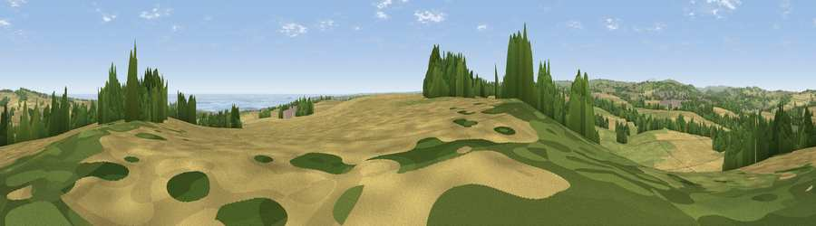

Viewpoint near Hipsburn
#5529 in England · top 22% of its area beats it · near HipsburnThe view, rendered

A 360° render of this exact spot computed from the terrain model, tree cover and land cover — summer colours, afternoon light, calibrated against photographs of famous viewpoints. Real trees, hedges and buildings will differ in detail.
The panorama
Grey silhouette: terrain skyline in each direction (720 bearings, Earth curvature and refraction included). Dashed green: skyline with trees (+15 m) and buildings (+8 m) as obstacles. Blue strip: how far the ground is visible on each bearing.
Where the view opens
Wedge length = distance to the farthest visible ground on that bearing (vegetation-aware). Rings at 10, 25 and 50 km.
What fills the view
48% cropland · 28% grassland · 13% woodland · 9% water · 2% built-up
Angular shares of the visible panorama (visual magnitude), not map area. Landscape diversity 0.55 (0–1 Shannon).
Key numbers
More beautiful places nearby
The staircase of upgrades: each row has a higher view potential than everything closer. Driving times are estimates from straight-line distance, calibrated against real road routing — check an actual route before setting out.
| Place | Direction | Drive | Score |
|---|---|---|---|
| Viewpoint near Shilbottle | SW · 3 km | ~8 min | 70.6 |
| Viewpoint near Alnwick | WNW · 4 km | ~9 min | 72.0 |
| Ratcheugh Crag | N · 4 km | ~9 min | 75.8 |
| Viewpoint near Alnwick | WNW · 7 km | ~15 min | 77.7 |
| Cloudy Crags | WNW · 8 km | ~16 min | 80.2 |
| Viewpoint near Glanton | WNW · 14 km | ~25 min | 82.9 |
| Viewpoint near Eglingham | NW · 18 km | ~31 min | 83.8 |
| Viewpoint near Chillingham | NW · 20 km | ~34 min | 88.1 |
55.38821, -1.65763 · source: screening · position refined by local search. Computed location — check access rights before visiting.